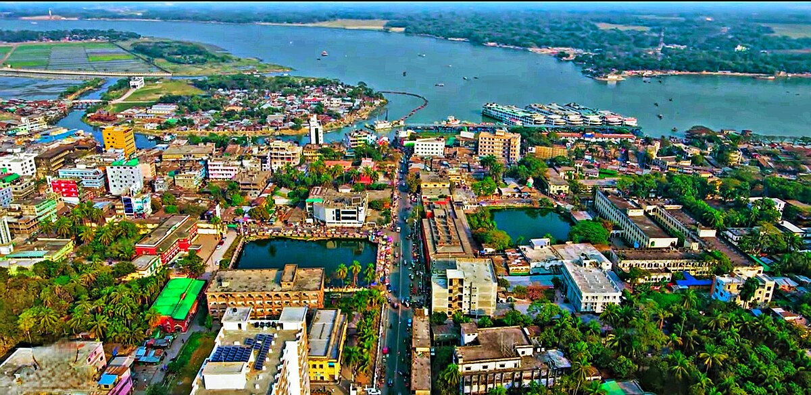
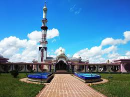
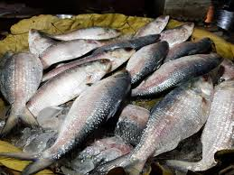
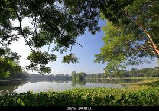
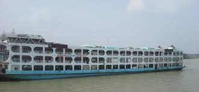
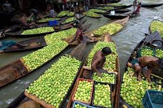

Barisal is known as the "Venice of the East" because of its vast network of rivers and canals.
It is located in the south-central part of Bangladesh, surrounded by greenery and waterways.
The city is famous for guava cultivation and river-based transportation.

📜 History
Barisal has a rich history dating back to the Mughal era when it was an important trade center.
It played a significant role during the British colonial period as a hub for jute and rice trade.
The region was also active in the Bangladesh Liberation War of 1971.

🎭 Culture
The people of Barisal are warm, hospitable, and deeply connected to river life.
Traditional festivals include boat races and harvest celebrations.
Local cuisine is rich in fish dishes, coconut-based sweets, and fresh fruits.

🌊 Tourism
Kuakata Sea Beach – Famous for watching both sunrise and sunset.
Durga Sagar – The largest pond in southern Bangladesh.
Floating Guava Market – A unique riverside marketplace.
🏞️ Durga Sagar
Durga Sagar is the largest pond in southern Bangladesh, located in Barisal. It’s a beautiful place for sightseeing and boating, especially during sunset.

⛵ Barisal Traditional Boat
Barisal is famous for its extensive river network and traditional wooden boats that connect the local communities. These boats are an integral part of daily life and culture in Barisal.

🚤 Floating Guava Market
The Floating Guava Market is a unique riverside market where local farmers sell guavas directly from their boats. It's a colorful and vibrant experience.

🗺️ Location Map of Barisal
The location of Barisal city is shown on the map below."
।